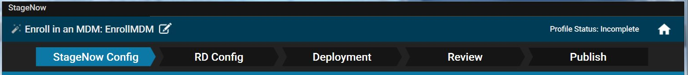
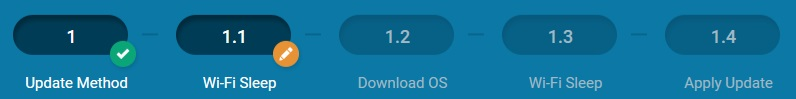
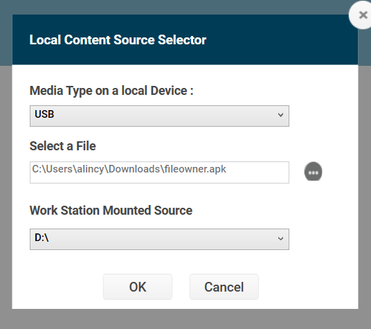
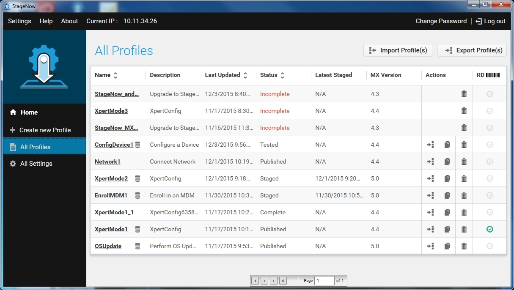
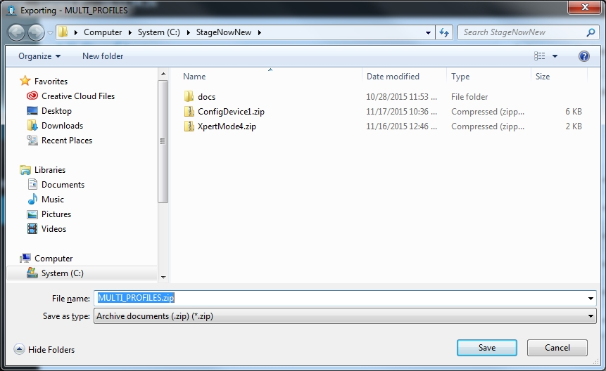

Overview
This section describes how to create, deploy and manage staging Profiles from settings input by the staging administrator. From these Profiles, the StageNow desktop tool outputs barcodes or binary files that configure a Zebra device when consumed by the StageNow client app on the device.
Profile Process
Device staging is broken into four parts, all of which center around a staging Profile created to contain device configuration settings entered by the administrator.
During the Configure phase, device Settings Types (which Zebra calls Configuration Service Providers, or CSPs) are selected and information for each is entered into StageNow and stored in barcodes or binary (
.bin) files to be consumed by the StageNow client app on the device.- It's important to understand that the number of settings entered in the Configure phase effects the number of barcodes (or the size of
.binfiles) required for the Profile.
- It's important to understand that the number of settings entered in the Configure phase effects the number of barcodes (or the size of
The Deployment phase is for selecting settings that do not reside in StageNow barcodes or local
.binfiles, but instead are stored in a file on a StageNow deployment server. This can help reduce the number of barcodes (or the size of.binfiles) required for staging. However, a network connection is required during staging to connect the client device to the server and point to the deployment file. This connection and file direction MUST be set up in the Configure section.The Review phase presents all settings information entered in the Configure and Deployment sections in a single page for easy validation. From here, the administrator can return to any setting to update it, add comments to the Profile and finish creating the Profile.
The Publish phase allows the administrator to select the method of delivery (linear barcodes, PDF417 barcodes or NFC tags, as well as the XML or Enhanced XML (eXML, also referred to as "JS" in StageNow) on-device configuration method) for the completed Profile, as well as to test, publish and stage the Profile.
Also See
- Dynamic Profiles | Create multiple Configure barcodes from a single Profile using imported data
- Smart Profiles | Automatically generate Profiles for device OS updates
- Trusted Staging | Protect devices from unauthorized configuration changes
- ZWC Setup and Admin (.pdf) | Zebra Workstation Connect staging instructions
Alert Button
Zebra devices offer the ability to designate a key as a "panic button" that when long-pressed executes an intent to perform a customized task such as dialing an emergency phone number, summoning medical assistance or launching any custom Android app or activity.
Required Services
Programming an Alert Button in the way recommended by Zebra requires use of all three CSPs shown below.
- KeyMapping Manager assigns a Key Code to a Key Identifier.
- Intent assigns a Key Identifier to an intent to be sent when the Key Code assigned to that Key Identifier is long-pressed.
- Power Manager (optionally) assigns the key as a wake-up source to ensure that the Alert Button operates from suspend mode.
Zebra recommends setting the Alert Button as a wake-up source to ensure operation from all device states.
Summary of Steps
The steps for creating an Alert Button are listed below, and must be executed in the order shown for proper operation. Detailed instructions for the steps are provided in the sections that follow.
To create an Alert Button:
- Create a Profile.
- Select MX version (MX 10.2 or later is required).
- Select Xpert Mode Wizard.
- Enter a Profile name and click "Start" button.
- Select PowerMgr CSP and click (+) button.
- Select KeyMappingMgr CSP and click (+) button.
- Select Intent CSP and click (+) button.
- Click "Add" to proceed.
PLEASE READ BEFORE PROCEEDING:
COMPATIBILITY NOTE: Not all wake-up sources (buttons) are available on all devices. For compatibility with the broadest array of devices, skip steps 9 and 10 (for programming a specific button as a wake-up source) and proceed to Step 11 to activate all available wake-up sources. - In PowerMgr "Wake-Up Action" section, select "Turn on" option and click Continue.
- In the “Choose a key to control” section, select the desired key to be designated as the Alert Button from the drop-down. Click "Continue" button.
SKIP TO STEP 12. - In the "All Wake-up Sources" section, select "Turn on" to activate wake-up keys on all available wake methods.
- In PowerMgr "All Wake-up Method" section, select “Use Hardware Signals for Wake-Up.”
When finished, click "Continue" button. - In KeyMappingMgr "Choose a Key to Modify" section, select the key designated as the Alert Button.
- In KeyMappingMgr "Key behavior" section, select "Send key-code". The key-code drop-down appears.
- From the KeyMappingMgr key-code drop-down, select “none.”
IMPORTANT:To ensure Alert-Button functionality in any keyboard state, map “none” to every key behavior (“Key behavior in Blue mode,” “Key behavior in Orange mode,” etc.).
When finished, click "Continue" button.- In Intent "Mode" section, select "Schedule sending of intent on key presses" option.
Optional: To prevent device from entering suspend mode, check the "Keep Device Awake" checkbox. - In Intent "Key Identifier" section, select the key designated as the Alert Button.
- In the Intent "Android Action Name" section, enter the desired action for the use case.
For example,android.intent.action.CALLsummons the Android native dialer. - Enter data for any additional required fields for the desired use case.
For example, entering "tel:+18885551212" in the Intent "URI" field places a call to 1-888-555-1212. - When finished entering data, click Continue.
- Generate a barcode (or
.binfile for deploying via NFC tag or SD card). - Scan the barcode (or deploy the
.binfile) to configure the target device. - When staging is complete, test Alert Button functionality by short-pressing, then long-pressing the newly programmed key.
Alert Button Notes
- The intent function reads only the base state of a given key identifier; it does NOT read any of the keyboard-modifier states (i.e. ALT, SHIFT, color, etc.). To prevent the device from ignoring Alert key-presses if the keyboard is NOT in the base state, map "none" to all keyboard states.
- To send the desired key code in ALL keyboard states, assign the desired Key Identifier to the key code in ALL keyboard states. More about KeyMapping.
- If the key had been previously assigned a function (i.e. as a scan trigger), assigning the "none" key code removes the pre-existing function. This dedicates the key to the Alert Button function only.
- To test Alert Button functionality, short-press then long-press the designated button.
- To prevent changes to Alert Button settings, block user access to the Android Settings panel.
- To prevent the device from entering suspend mode, check the "Keep Device Awake" button in Intent Manager.
I. Create a Profile
The staging administrator uses the provided StageNow Wizards to configure settings that define software configuration and installation for enterprise devices. NOTE: The number of settings created in this section affects the number of barcodes and/or .bin files generated to configure device(s).
When creating a Profile for staging the device, the administrator progresses through the following steps in the banner provided in the Workstation Tool:

Click image to enlarge; ESC to cancel.
NOTE: The Rapid Deployment (RD) Configure section appears only if Legacy Mode is turned on in the Settings screen. Setting information entered in the RD Configure section is stored within RD barcodes.
Profile States
As progress is made through the Wizard, the top right corner of the window reflects the state of the Profile:
 Click image to enlarge; ESC to cancel.
Click image to enlarge; ESC to cancel.
Incomplete - The Profile is not yet complete.
Complete - All information required by the Wizard is included in the Profile, but it is not yet tested to ensure the Profile functions as intended.
Tested - The Profile was tested to determine whether it is sufficiently operational for staging. It is not yet visible to the operator.
Published - The Profile is visible to the operator.
Staged - The operator has acquired the Profile, i.e., generated barcodes and exported data to write to an NFC tag.
Navigating the Wizard
Following are tips for navigating through the Wizard.
Click on the sections of the primary banner (e.g., StageNow Config, RD Config) to view that section. Note that section must be completed before clicking ahead to the next section.
Click image to enlarge; ESC to cancel.
Use the "Back" button to return to the previous section and the "Continue" button to proceed to the next section.
 Click image to enlarge; ESC to cancel.
Click image to enlarge; ESC to cancel.
Similarly, click on the oval buttons in the secondary banner to view that sub-section. Each sub-section must be completed before clicking ahead to the next one.
 Click image to enlarge; ESC to cancel.
Click image to enlarge; ESC to cancel.
The small round buttons adjacent to each oval button indicate the status of that section:
Green check indicates that section is complete.
Green eye indicates the section being viewed.
Orange icon with a pencil indicates the section that is in process.
Orange icon with a pause symbol indicates a section in progress while viewing another section.
Grayed-out oval with no adjacent round button indicates a section not yet started.
Use the arrows at the beginning and end of the secondary banner to scroll through these sub-sections.
 Click image to enlarge; ESC to cancel.
Click image to enlarge; ESC to cancel.
When selecting "Yes" for a secondary banner item, additional subsections are added to the banner.

Click image to enlarge; ESC to cancel.
To edit the Profile name, click the pencil icon next to the name.
 Click image to enlarge; ESC to cancel.
Click image to enlarge; ESC to cancel.
At any point, click the Home button to return to the Home screen.
 Click image to enlarge; ESC to cancel.
Click image to enlarge; ESC to cancel.
When populating a setting template window within a Wizard, to make the setting available for selection when creating other Profiles, select the Save Setting for Re-use checkbox, and enter a name for the setting. See Save for Reuse for more information.
II. Configure
To create a Profile, open the StageNow Workstation Tool and log in.
Select Create New Profile, and then select the device MX version from the drop-down menu. The tool retains the current selection when configuring future Profiles.
Initially, a warning appears indicating that selecting an incorrect version can cause staging to fail. If target devices contain different versions of MX, select the lowest version. Select the checkbox on this window to suppress display in the future.
Zebra recommends setting MX 11.3 as the target version for generating eXML barcodes.
 Click image to enlarge; ESC to cancel.
Click image to enlarge; ESC to cancel.
Select one of the following Wizards and select Create.
After completing the StageNow Configure and RD Configure sections of the Wizard, proceed to the next section of the Wizard. Certain Wizards include a Deployment section, whereas others proceed to the Review section.
MX Selection
If selecting MX 6.X for the applicable Wizards, the first Wizard window displays a prompt for selecting one of the following options from the drop-down menu: * "The devices I wish to provision are currently not connected to a network. I will define a network with this Profile that will be used for staging." * "The devices I wish to provision are already connected to a network that will be used for staging." Click image to enlarge; ESC to cancel.
Click image to enlarge; ESC to cancel.
Select an option and proceed to the instructions for the selected Wizard.
MX Notes
- The second and third options above are supported only by Wizards that use the Deployment section of the tool.
- StageNow 2.9 (and later) supports plug-in CSPs, which deliver additional MX features not included with a given StageNow version.
- Plug-in CSPs are delivered as a
.zipfile. DO NOT unzip! - Copy the
.zipfile to the following folder on the StageNow admin PC:\Program Files (x86)\Symbol Technologies\Staging_Solution\SNCertFiles\
- If the plug-in CSP was unzipped or delivered as separate files, use the following steps to (re)create a
.zipfile:- Use PKzip or a compatible compression utility to zip the CSP and its corresponding DSD file into a single
.ziparchive file. - Name the new file
[CSPname].zip(substituting "[CSPname]" for the real name. Example:RfidMgr.zip). - Copy the file to the folder shown above.
NOTE:Do NOT drag the file as described on the CSP Library screen.
- Use PKzip or a compatible compression utility to zip the CSP and its corresponding DSD file into a single
- On the CSP Library screen, click the "OR, CHOOSE FILE" button and select the desired CSP's
.zipfile. - The parameters of the plug-in CSP are now available using the standard process for creating a staging profile.
In case of trouble with Profiles that use a plug-in CSP,refer to the Troubleshooting page.
 Click image to enlarge; ESC to cancel.
Click image to enlarge; ESC to cancel.
III. Deployment
Use the Deployment section of the Wizard to specify the subset of the settings that define what the Profile does, and store these settings on a deployment server. See the specific Profile Wizard for instructions.
The Deployment section does NOT appear in "Connect Network," "Manage Device Security" or "Wipe a Device" Wizards.
Wizards that include a Deployment section require that device(s) establish a network connection for accessing the Deployment Server to acquire the remainder of the staging instructions.
 Click image to enlarge; ESC to cancel.
Click image to enlarge; ESC to cancel.
IV. Review
The Review section of the Wizard allows selection verification.
 Click image to enlarge; ESC to cancel.
Click image to enlarge; ESC to cancel.
Select Expand to view the StageNow configuration and RD configuration settings. This setting list offers the following fields:
- Step - The section step where the Administrator added the setting.
- Description - A user-defined "friendly" description of the setting.
- Last Updated - Last time the Profile was updated.
- View - Click to view/modify the setting.
Select Change to make any changes to the settings.
Select the icon next to Profile Description to enter a description for the Profile.
 Click image to enlarge; ESC to cancel.
Click image to enlarge; ESC to cancel.
Enter the description and select Save.
Encryption for staging data is selected by default in order to protect the sensitive data encoded in the Profile barcode or NFC tag. See StageNow Encryption for more information. De-select this checkbox if necessary to save space.
Select Complete Profile to proceed to the Publish window. The Profile status at the top right of the screen is now Complete.
V. Publish
The Publish section of the Wizard permits selection of a staging method, testing of the method for Profile functionality, and making the Profile available to the staging operator. This window lists the available Profile delivery types, and displays dates and times when the Profile was Last Tested, Published and Staged.
 Click image to enlarge; ESC to cancel.
Click image to enlarge; ESC to cancel.
Barcode Profile Staging
Scanning barcodes from a monitor or device screen can cause difficulty decoding due to light reflection. To help alleviate this, turn off illumination and/or enable LCD mode on the device. See DataWedge Reader Params for more information.
For best results, Zebra recommends scanning barcodes only from printed materials.
To stage a barcode Profile:
1. Select the Barcode tab:
Click image to enlarge; ESC to cancel.
2. To stage devices from content stored on a server, check the "Host the Deployment Package Outside of StageNow FTP Server" and enter the server address and fully qualified file name (including path, see image above) of server-based content using the Source URI syntax. For more information and examples of this syntax, see the Source URI and Examples sections of the File Manager guide. This feature supports HTTP, HTTPS, FTP and FTPS (FTP over TLS or SSL) protocols and basic authentication of URL-embedded credentials (Devices with MX 4.4+ support FTP only; HTTP/HTTPS requires MX 7.0 or later on device; FTPS requires MX 7.1 or later).
Information contained in URI fields CANNOT be edited after the Profile is exported for deployment. Learn more.
NOTE: To facilitate a fast and easy device-staging experience, HTTP and FTP protocols are supported. Security of the staging environment should be reviewed prior to usage. The FTP server built-into StageNow is accessed through a username and password hard-coded into StageNow desktop and client apps. This could potentially open the server to unauthorized access unless mitigating security controls are employed.
 Click image to enlarge; ESC to cancel.
Click image to enlarge; ESC to cancel.
If staging devices from an FTP server using eXML, the binary file MUST be prepended with "Js" to avoid failure(see image above).
3. Select the checkbox for PDF417 or Linear in the upper two rows (XML) or lower two rows (eXML) to specify the type of barcode for deployment, or choose Select All to test all barcode types.
If selecting eXML, see important eXML Staging Notes below.
4. Select "Test" to validate the functionality of the Profile before publishing. This generates a PDF of test staging barcode(s). Zebra strongly recommends testing to determine whether the Profile functions as intended before making it available to the operator(s) for staging devices.
 Click image to enlarge; ESC to cancel.
Click image to enlarge; ESC to cancel.
IMPORTANT NOTE:Version numbers here indicate the minimum Android and MX versions that Zebra supports for using the barcode(s) on this sheet. Depending on the settings being configured, it's possible that the barcode(s) would work to stage devices containing older versions, but it's not guaranteed or recommended.
5. If the staging material functions properly, select "Publish" to publish the material for operator use. Note that the administrator can choose to publish only certain types of barcodes that were successfully tested, and publish the others when ready.
6. Enter staging instructions for the operator and click "Publish Now" to continue.
 Click image to enlarge; ESC to cancel.
Click image to enlarge; ESC to cancel.
7. To make the Profile available for staging, select "Stage" to generate a PDF of staging barcode(s) that devices can scan for staging. See Device Staging.
 Click image to enlarge; ESC to cancel.
Click image to enlarge; ESC to cancel.
8. To export the Profile for later consumption, select one of the "Export for JS," "Export For StageNow" or "Export For MDM" options. Also see Exporting Staging Profiles.
Profile creation is complete
To remove operator access to a Profile, select "Unpublish"
eXML Staging Notes
- eXML is referred to as "JS" in the StageNow desktop tool.
- Zebra recommends targeting MX 11.3 (or later) if generating eXML barcodes.
- Scanning eXML barcodes requires StageNow 11.02 (or later) on the device.
- Profiles targeting devices with MX 10.x (or earlier) CANNOT be modified to generate eXML barcodes.
Such Profiles must be recreated from scratch to target MX 11.3 (or later). - Deployment of binary eXML files via FTP server is supported ONLY by StageNow 5.12 or later.
- Persistence via eXML barcodes is NOT SUPPORTED on devices running Android 11.
NFC Profile Staging
Data contained in the
.binfiles for NFC or USB/SD Card staging is limited to the equivalent of two (2) barcode PDF files. If “file too long" (or similar) message appears when generating the file, reduce the file size by moving settings in the "Config" section of the Profile to the "Deployment" section until the barcodes generated for the Profile requires no more than two (2) PDFs.
To stage an NFC Profile:
- Select the NFC tab.
 Click image to enlarge; ESC to cancel.
Click image to enlarge; ESC to cancel.
Select Test to test the functionality of the Profile before publishing. This saves the NFC tag as a
.binfile for testing. While this step is optional, it is important to determine whether the Profile functions as intended before making it available to the operator(s) for staging devices.If the staging material functions properly, select Publish to publish the material for operator use.
Enter staging instructions for the operator.
Select Publish Now.
To make the Profile available for staging, select Stage. This saves the NFC tag as a
.binfile that devices can read for staging. See Device Staging.To export the Profile for an MDM or for StageNow, select the Export For MDM or Export For StageNow button. See Exporting Staging Profiles.
Profile creation is complete.
To remove operator access to a Profile, select "Unpublish."
USB and SD Card Profile Staging
StageNow 3.3 (and later) allows the .bin file(s) generated during the NFC Staging process to be used for staging a device from a USB drive or SD card.
To automatically stage a device from a USB drive or SD card:
- Generate
.binfile(s) using the NFC Profile Staging procedures above. - Create a folder called "Stagenow" on a USB drive or SD card.
- Copy the
.binfile(s) to the new folder's root level. - Attach (or insert) the storage device and boot the (new or enterprise-reset) device to be staged.
To manually stage a device from a file on the device:
- Generate
.binfile(s) using the NFC Profile Staging procedures above. - Copy the
.binfile(s) to any location on the device. - Launch the StageNow client and tap the "Browse" button.
- Navigate to and tap the
.binfile copied in Step 2 to begin staging.
Android Setup Wizard Bypass
- On devices with MX 9.0, processing any
.binfile automatically bypasses the Android Set-up Wizard (SUW). - On devices with MX 9.1 and later, processing includes a security check to ensure that bypass occurs only if the StageNow Profile was created using MX 9.1 or later.
- Devices with MX 9.1 (or later) automatically skip the Android Set-up Wizard and begin staging when a
.binfile is found.
Learn more about SUW bypass limitations.
Scanning the SUW bypass barcode signifies acceptance of Google Privacy Policy and Google Terms of Service.
Staging from External Storage
- StageNow writes the name and path of the storage medium into the Profile. The same medium (with the name/path unchanged) can then be connected to the device and used as the source of staging data instead of a host PC or server.
- All files needed for staging MUST be present in external staging medium for successful device staging by this means. More info below.
- A Staging Profile stored on SD card takes precedence over USB (if both are present).
USB Staging Platform Notes
If using a USB stick as the Source Access Method during Profile creation:
For SDM660-platform devices, the USB-based storage path (mount point) is preceded by/storage/usbotg/, as below: Click image to enlarge; ESC to cancel.
For 8956-platform (and earlier) devices, the USB-based storage path (mount point) is preceded by/storage/xxxx-xxxx/as below, wherexxxx-xxxxis an unique identification number assigned to each USB stick:
 Click image to enlarge; ESC to cancel.
Click image to enlarge; ESC to cancel.
To view this unique number, mount the USB stick on the host PC and execute the following commands in a terminal window:adb shell cd /storage/
To avoid the requirement to use a unique USB storage number:
- Select USB as the media type in StageNow.
- Mount the USB stick on the host PC.
The workstation assigns a drive letter (usually "D:\") to the stick and copies the files from the host PC to the stick. - Finish creating the Profile and generate staging barcode(s) as usual (details below).
- When ready to stage a device, connect the USB stick to the target device and scan the barcode.
The files are transferred from USB stick to the device as directed by the Profile.
Serverless Staging
Files required for staging (.apk, .pfx .bin, etc.), can be copied to a USB or SD card storage medium during Profile creation and consumed by a device being staged, removing the need for the device to connect with an FTP server or PC host when it executes the staging Profile.
To use external storage for staging:
- Mount the USB or SD card on the host workstation.
- Add FileMgr to the Profile.
- Under "Target Source Access Method," select "File in the Device File System."
- Under "Source Access Method," select "File in the Device File System."
- The Local Content Source Selector appears (as below). Select source and Click OK.

Click image to enlarge; ESC to cancel.
- Confirm that the "Source Path and File Name" field has been populated correctly in the Profile, including the unique identification number (if USB storage) similar to the example image:
Click image to enlarge; ESC to cancel.
- Complete the Profile and generate barcode(s).
To stage the device:
- Connect the media to the device and mount. Then:
a. Scan the barcode(s) to apply the staging Profile.
b. Open StageNow client on device and navigate to the.binfile on the device to begin staging.
Copying a Staging Profile
To create a new Profile by copying an existing one:
Select the Copy icon (shown below) next to the Profile.
 Click image to enlarge; ESC to cancel.
Click image to enlarge; ESC to cancel.
Enter a new name for the Profile, and select Save.
 Click image to enlarge; ESC to cancel.
Click image to enlarge; ESC to cancel.
A window indicates the Profile was copied successfully. Select OK.
See the next section for instructions on editing the new Profile.
Editing a Staging Profile
In-progress Profiles might function incorrectly if StageNow is upgraded before Profile creation is completed. Zebra recommends completing any unfinished Profiles before updating StageNow.
To edit a Profile:
Select the Profile from the Home screen.
Use the navigation UI in the Wizard to locate the setting to update. See Navigating the Wizard.
 Click image to enlarge; ESC to cancel.
Click image to enlarge; ESC to cancel.
Select "Edit" to enable the fields for updating.
Make the required changes and select Save.
Select "Continue" and proceed through the Wizard.
In the Review section, select "Complete Profile" to move to the Publish section to generate updated barcodes or NFC tags.
Exporting Staging Profiles
Incomplete Profiles cannot be exported.
To export a Profile for StageNow or an MDM:
Select the Export icon next to the Profile.
 Click image to enlarge; ESC to cancel.
Click image to enlarge; ESC to cancel.
Click image to enlarge; ESC to cancel.Select whether to export for an MDM or for StageNow.
 Click image to enlarge; ESC to cancel.
Click image to enlarge; ESC to cancel.
If selecting Export For StageNow, to lock the Profile so it cannot be changed and hide the details from other administrators, select the check box, and then select OK.
Select a location for the Profile and select Save. A window indicates that the Profile was exported successfully.
Select OK.
RD settings are not exported and cannot be imported.
Exporting All Profiles
Only completed Profiles are exported.
To export all staging Profiles:
Select All Profiles.  Click image to enlarge; ESC to cancel.
Select the Export Profile(s) button.
Click image to enlarge; ESC to cancel.
To lock the Profile so it cannot be changed and hide the details from other administrators, select the check box.
Select OK.  Click image to enlarge; ESC to cancel.
Change the default if desired (leaving the
.zipextension), navigate to a location for the Profile to be saved and click Save. A window will appear to indicate that the Profile was exported successfully.Select OK.
All completed Profiles are exported and saved into the .zip file.
Importing a Staging Profile
To import a Profile:
Click "All Profiles" in the Home screen's left-hand pane: Click image to enlarge; ESC to cancel.
Click "Import Profile(s)" button. A navigation dialog appears:
 Click image to enlarge; ESC to cancel.
Click image to enlarge; ESC to cancel.
Navigate to the file to be imported and click "Import" button. A dialog appears to indicate that the Profile was imported successfully.
Click OK.The imported Profile appears in the Profiles list. Profiles locked during export appear with a lock icon after import: Click image to enlarge; ESC to cancel.
After importing a staging Profile, its settings counters are reset to zero (see below).
 Click image to enlarge; ESC to cancel.
Click image to enlarge; ESC to cancel.
Deleting a Staging Profile
To delete a Profile:
Select the trash icon next to the Profile.

 Click image to enlarge; ESC to cancel.
Click image to enlarge; ESC to cancel.
Select OK to confirm the deletion.
A window indicates that the Profile was successfully deleted. Select OK.
Upgrading Profiles
StageNow 2.3 (and later) allows Profiles created in any released or beta StageNow version to be upgraded to the latest StageNow version.